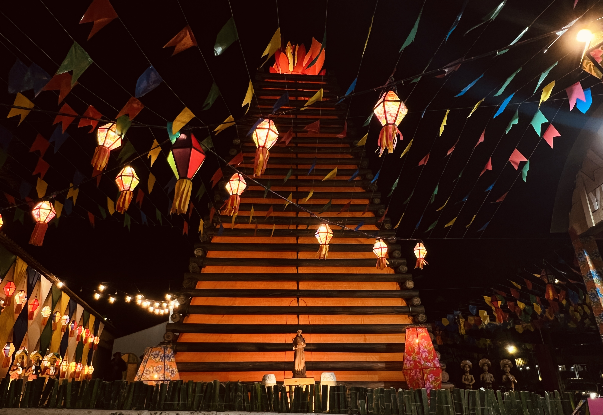
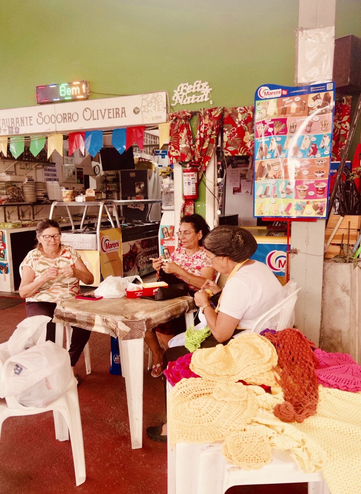
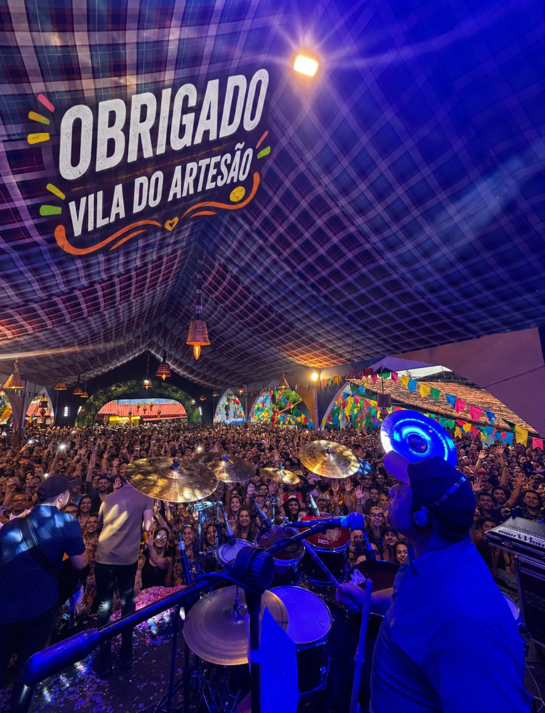

Campina Grande · Paraíba
Sobre a Vila do Artesão
Desde 2010, a Vila do Artesão reúne trabalho manual, cultura popular e oportunidades para artesãos de Campina Grande. Conheça sua trajetória e o papel do espaço na vida cultural e turística da cidade.
Origem e fundação
Fundada em dezembro de 2010, a Vila do Artesão nasceu como uma iniciativa pública para reunir artesãos de Campina Grande em um espaço de produção, exposição e comercialização de seus trabalhos. A Prefeitura e a Agência Municipal de Desenvolvimento (AMDE) identificam a Vila como um espaço público dedicado à valorização da cultura nordestina.
Propósito cultural e econômico
Ao aproximar quem produz de moradores e visitantes, a Vila contribui para dar visibilidade ao artesanato local e criar oportunidades de renda para os artesãos. O espaço também promove o encontro com expressões da cultura nordestina e integra os atrativos culturais e turísticos de Campina Grande.
Artesanato e diversidade de materiais
Reportagens e registros culturais sobre a Vila documentam trabalhos em barro, couro, madeira, fios, tecidos, rendas e bordados, entre outras técnicas e matérias-primas. Essa variedade se traduz em peças utilitárias e decorativas, feitas à mão e ligadas a diferentes saberes artesanais. Os exemplos refletem registros de períodos distintos, não um inventário atualizado de todos os produtos disponíveis.
Revitalização do espaço
Em 2024, a Vila passou por ações de revitalização que incluíram melhorias na fachada, pintura dos chalés, murais inspirados na xilogravura, uma nova capela e um novo palco. Também foram ampliadas as opções de comidas típicas. As intervenções renovaram o ambiente e sua identidade visual, mantendo o artesanato como parte central da experiência.
Visitação e São João
A Vila recebe visitantes ao longo do ano e ganha movimento especial durante o período junino, quando a programação cultural e a procura turística se intensificam. A AMDE registrou mais de 15 mil pessoas no Dia de São João de 2023. Em outro evento, em 13 de junho de 2026, a Vila atingiu a capacidade máxima e fechou os portões, com mais de 7 mil pessoas presentes simultaneamente. São registros de ocasiões específicas, não dados anuais de visitação.
Horário de funcionamento:
Um passeio pela Vila
Fotografias do espaço, do artesanato e de atividades culturais na Vila do Artesão.







Fotografias: Caroline Mota
Sobre este projeto
O site é um projeto de extensão universitária da UNIFACISA, desenvolvido em parceria com a Vila do Artesão e a Casa do Empreendedor.
A proposta é oferecer um ponto de partida acessível para conhecer a Vila, consultar o catálogo e acompanhar histórias autorizadas.
Fontes e leituras
- Vila do Artesão completa 13 anos, nesta sexta-feira — AMDE, 21 de dezembro de 2023.
- Vila do Artesão de Campina Grande comemora 12 anos de história nesta quinta-feira — Prefeitura de Campina Grande, 21 de dezembro de 2022.
- ESPECIAL: Vila do Artesão – Um lugar cheio de vida(s) — Repórter Junino, 12 de junho de 2016.
- Vila do Artesão — Paraíba Criativa, sem data de publicação informada (acesso em 15 de novembro de 2026).
- Revitalização da Vila do Artesão impulsiona cultura, artesanato e economia local — ParaíbaOnline, 3 de junho de 2024.
- Recorde de Público: Vila do Artesão atrai mais de 15 mil visitantes no Dia de São João — AMDE, 24 de junho de 2023.
- Vila do Artesão com recorde de público e portões fechados! — AMDE, 13 de junho de 2026.
- Vila do Artesão preserva trabalho de artesãos de Campina Grande — G1 Paraíba, 15 de junho de 2014.